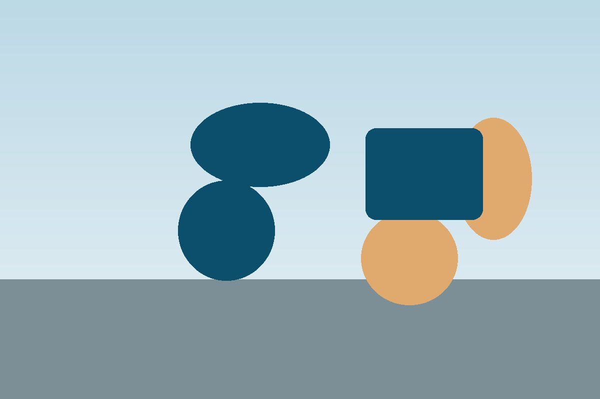

Welcome to Quayside Physiotherapy

Quayside Physiotherapy is a friendly, independent clinic on the harbour in Fowey, helping people get moving again since 2008.Whether it's a bad back, a sports injury or getting back on your feet after an operation, our chartered physiotherapists will find out what's wrong and give you a plan to fix it.
You don't need a GP referral. Most appointments are available within the week.
Call 01726 830455 to book.